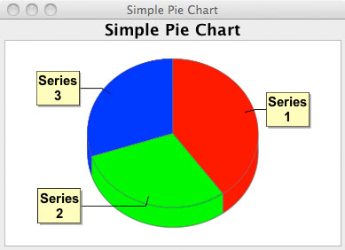

The goal of this project is to develop a Groovy Builder that simplifies creating charts from the Groovy language. GroovyChart is based on the Groovy builder paradigm, and applies it to the well known JFreeChart library.
We are glad to present the first snapshot release, this is what it says, a snapshot of CVS, to make it easier to try the product - not a production ready package.
In order to get started you will need:
Once you've got all the above packages unzip the groovychart snapshot zip into a suitable location. Next open $GROOVY_HOME/conf/groovy-starter.conf and on a new line at the end add the following line:
load $GROOVYCHART_HOME/lib/*.jar
This will allow you to use the groovychart libraries directly from either the Groovy Console or from the groovy script runner. To run the examples provided, change directory to $GROOVYCHART_HOME/examples and issue the command:
groovy PieChartDemo.groovy
To load one of the examples into the interactive groovy console UI, simply run groovyConsole
and select open from the file menu. Then, you can modify the script and run it directly from here.
Although we aim to provide great documentation for GroovyChart, we're not there yet. Anyway, you can get a long way by understanding what its based on. I can recommend the resources available at JFreeChart. A good starting point is to download the JFreeChart DeveloperGuide($$$), but this is not necessary to run GroovyChart.
Source for a simple pie chart
import com.thecoderscorner.groovychart.chart.ChartBuilder import groovy.swing.SwingBuilder import java.awt.BorderLayout as BL import javax.swing.JFrame import java.awt.Color import java.awt.Dimension import org.jfree.chart.ChartPanel ChartBuilder cb = new ChartBuilder(); def pieChart = cb.piechart3d(title: "Simple Pie Chart") { defaultPieDataset { Series1(40.0f) Series2(30.0f) Series3(30.0f) } antiAlias = true backgroundPaint(Color.WHITE) } def sb = new SwingBuilder() def fr = sb.frame( title : 'Simple Pie Chart', size:[600, 400], defaultCloseOperation: JFrame.EXIT_ON_CLOSE) { widget(new ChartPanel(pieChart.chart), constraints: BL.CENTER) } fr.pack(); fr.show();
Image produced from above source on Windows Vista
Future development:
If you're interested in contributing, you can file bugs/RFEs or subscribe to our mailing list. If you're really interested, we'd welcome any developers who wanted to roll up their sleeves and participate; in particular ones who already use Groovy and JFreeChart. Check out Membership to request a role.